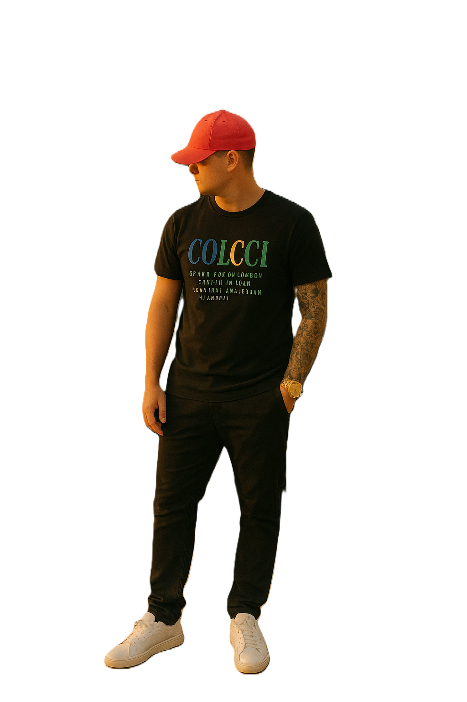

<section class="topo">
  
  <div class="topo-texto">
    <h1>Método Trader Inteligente</h1>
    <p>Pare de operar no escuro, aprenda com quem vive do mercado!</p>
  </div>
</section>

<style>
  .topo {
    display: flex;
    align-items: center;
    justify-content: center;
    gap: 30px;
    padding: 40px;
    background: #000;
  }

  .topo-imagem {
    width: 140px;
    height: 140px;
    border-radius: 50%;
    object-fit: cover;
    transition: transform 0.3s ease;
    cursor: pointer;
  }

  .topo-imagem:hover {
    transform: scale(1.15) rotate(5deg);
    box-shadow: 0 0 15px #800040cc;
  }

  .topo-texto {
    color: #fff;
    text-align: center;
  }

  .topo-texto h1 {
    font-size: 3.2rem;
    margin: 0 0 10px;
  }

  .topo-texto p {
    font-size: 1.3rem;
    font-weight: 600;
    margin: 0;
  }

  @media (max-width: 600px) {
    .topo {
      flex-direction: column;
      gap: 20px;
    }

    .topo-imagem {
      width: 120px;
      height: 120px;
    }

    .topo-texto h1 {
      font-size: 2.5rem;
    }

    .topo-texto p {
      font-size: 1.1rem;
    }
  }
</style>
